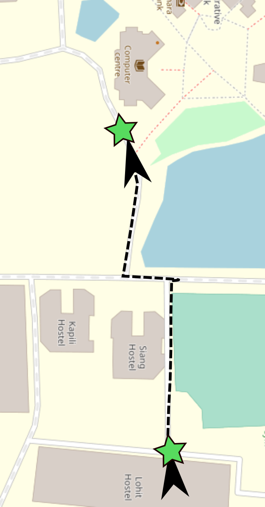
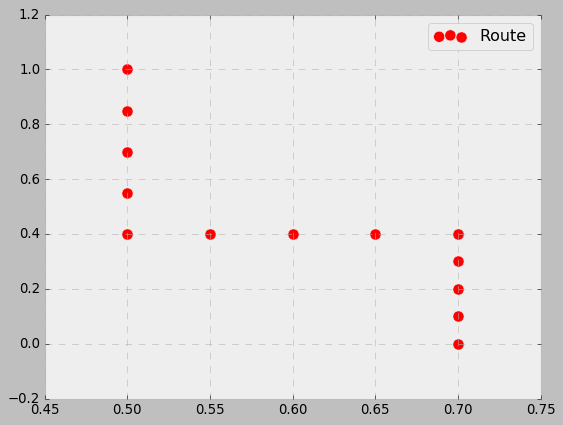
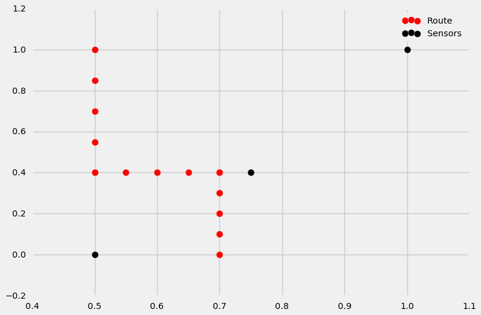
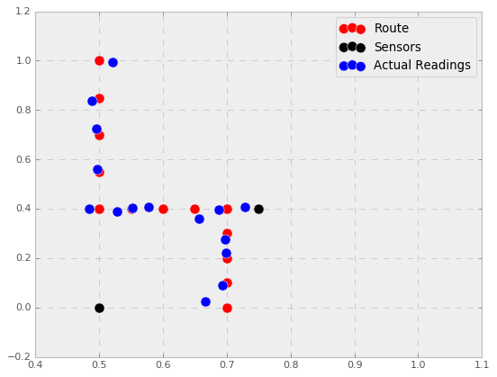
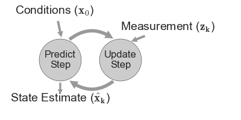

DSP Research Presentation
The problem

Snippet of the actual route from Lohit to Library
Representation

Representative Route
Sensors

Sensor Locations
Measurement

Measurement are noisy!
Brief on Bayes Filter

Why Particle Filters?
Applications
- Localisations of Robots
- Stock Trading
- Tracking aircrafts and other locomotives (SDVs)
Why prefer this over the other filters?
- Multimodal - Multi Objects
- Non Linear Behaviour - No Linear Model Required!
- Unknown Process Model - Knowing process model is good but not necessary
- Non Gaussian Noise - Noise can be abrupt as well
- Continous - Measurement Can be continous
- Multivariate - Many Properties can be tracked
- Occlusions - Collisions can be accounted for
How Particle Filters work?
Steps Involved:
- Generate Particles
- Predict Next State of the Particles
- Update Particles according to measurements
- Resample Particles
- Compute Estimate
Simulations, Bottlenecks and Improvements
Bottlenecks and Improvements
- Filter Degeneracy
- Filter Divergence - Noise of the sensor
- Computation Costs